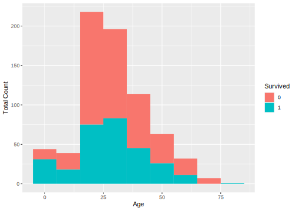
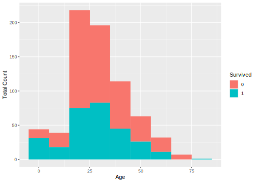

4.5 Actual Data Attributes Value Examination
To understand given datasets needs to carefully examine the values of each data attributes to:
- find any errors and missing values
- find value distribution
- find potential relation with the attribute to be predicted (also called dependent or response variable)
Finding errors, typos and missing values can set up the goals for data preprocess.
Since the examine covers both datesets train and test, it make sense to combine the two datasets into one big dataset, so it can save us to run the same code twice on the different datasets.
Copy the following code into your script,
# Add a "Survived" attribute to the test dataset to allow for combining with train dataset
test <- data.frame(test[1], Survived = rep("NA", nrow(test)), test[ , 2:ncol(test)])
# Combine data sets. Append test.survived to train
data <- rbind(train, test)
# We may need to keep the raw data into a file in case we need it later.
write.csv(data, "./data/data.csv", row.names = FALSE )Now we have a dataset data, which combines both datasets train and test datasets. We assigned the value of attribute Survived in the original dataset test as “NA”. You can check them in the WorkSpace pane by click variable data.
Thinking:
- Can we combine
trainandtestwithout add Survived attribute to thetest? Like,
data <- rbind(train, test)
- Why add attibute Survived as the second attribute? Can we add it as the first one? Like,
test <- data.frame(Survived = rep("NA", nrow(test)), test[,])
It is good idea to have a bird eye’s view on our combined dataset.
From now on, whenever you see code chunk. You are supposed to copy and past it into your own R file. So you will have your own copy of code. You can edit and modify it as you wish. You can run them too. We will no long explicitly tell you to do so.
## PassengerId Survived Pclass
## Min. : 1 Length:1309 Min. :1.000
## 1st Qu.: 328 Class :character 1st Qu.:2.000
## Median : 655 Mode :character Median :3.000
## Mean : 655 Mean :2.295
## 3rd Qu.: 982 3rd Qu.:3.000
## Max. :1309 Max. :3.000
##
## Name Sex Age
## Connolly, Miss. Kate : 2 female:466 Min. : 0.17
## Kelly, Mr. James : 2 male :843 1st Qu.:21.00
## Abbing, Mr. Anthony : 1 Median :28.00
## Abbott, Mr. Rossmore Edward : 1 Mean :29.88
## Abbott, Mrs. Stanton (Rosa Hunt): 1 3rd Qu.:39.00
## Abelson, Mr. Samuel : 1 Max. :80.00
## (Other) :1301 NA's :263
## SibSp Parch Ticket Fare
## Min. :0.0000 Min. :0.000 CA. 2343: 11 Min. : 0.000
## 1st Qu.:0.0000 1st Qu.:0.000 1601 : 8 1st Qu.: 7.896
## Median :0.0000 Median :0.000 CA 2144 : 8 Median : 14.454
## Mean :0.4989 Mean :0.385 3101295 : 7 Mean : 33.295
## 3rd Qu.:1.0000 3rd Qu.:0.000 347077 : 7 3rd Qu.: 31.275
## Max. :8.0000 Max. :9.000 347082 : 7 Max. :512.329
## (Other) :1261 NA's :1
## Cabin Embarked
## :1014 : 2
## C23 C25 C27 : 6 C:270
## B57 B59 B63 B66: 5 Q:123
## G6 : 5 S:914
## B96 B98 : 4
## C22 C26 : 4
## (Other) : 271This summary tell us a lot of information. Most obvious are:
- PassengerID is useless in terms of predicting survived or not. in addition, it is not much help that provide a statistical summary on it.
- Survived and Pclass numbers are useful and interesting.
- Name is mostly unique, which comes a surprise that only 2 names are repeated twice.
- Gender distribution among passenger is unbalanced that male overweight female.
- Age is interesting that minimum age 0.17 is alarming and there is 263 missing values.
- SibSp tells us the largest relatives travel together is 8.
- ParCh tells us the largest family travel together is 9.
- There are a number of ticket has the same number. The most repeat number is
CA. 2343, which has 11 duplicates. - Ticket Fare shows the minimum is 0, which is interesting that someone take a free ride. The maximum is over 512, which is far too expensive when the mean value is only about 33.
- Cabin has a large number of missing values (identified by "").
- Embarked only has three values which is not a good sign for prediction. It also has 2 missing value.
You can see now one function can provide so much information. Quantitative summary is a great tool for a data scientist.
Now, Let us exam each attribute,
PassengerID
PassengerId is an identifier, So only its uniqueness and missing value are considered.
There are many ways you can use to find out. I simply check its total number and its unique number. If the both equal to the number of records in the dataset, it shows that there is no duplication and no missing values in the attribute.
So we do,
## [1] 1309## [1] 1309The results shows the both number 1309, which is equal to the total number of records in the dataset. It proves the PassengerID has no missing value and duplication.
Survived
Survived is the attribute that its value will be produced by a model for the dataset test6. So, our exam will be conducted only on dataset train. Again we can check the numbers to see whether they can add up or not. As we already mentioned that it makes sense to change the Servived from type chr into Factor. We do,
# Exam Survived
data$Survived <- as.factor(data$Survived)
table(data$Survived, dnn = "Number of Survived in the Data")## Number of Survived in the Data
## 0 1 NA
## 549 342 418The results proved that the Survived value has the correct numbers:
- 418 ‘
NA’ values are the Survived’s value in the test dataset, and - the 549 death and 342 survived, together made up the total number of train dataset, which is 891.
So we know the value of Survived in the train dataset are correct and has no missing values. It is interesting here to think about the survival rate. How to calculate?
# Calculate the survive rate in train data is 38% and the death rate is 62%
prop.table(table(as.factor(train$Survived), dnn = "Survive and death ratio in the Train"))## Survive and death ratio in the Train
## 0 1
## 0.6161616 0.3838384So we know the survive rate in the train dataset is 61.62%. This is interesting because it reflects the overall survival rate and this rate should be maintained in the test too.
Pclass
Pclass is the feature which splits the passengers into three division namely class-1, class-2, class-3. As we understood it should be in type of Factor rather than int. We shall change its type first and then to see if there missing value or errors. It is also good to know the survival rate in each class. So. we can compare with the overall survival rate in the dataset train. It will give us an impression about the social status on survival.
Run the following code.
# Examine Pclass value,
# Look into Kaggle's explanation about Pclass: it is a proxy for social class i.e. rich or poor
# It should be factor rather than int.
data$Pclass <- as.factor(data$Pclass)
# Distribution across classes into a table
table(data$Pclass, dnn = "Pclass values in the Data")## Pclass values in the Data
## 1 2 3
## 323 277 709If you want, you can check the total of the three classes which is 1309. It equals to the total number of records in the Data (total number of passengers). And there is no other numbers than 1, 2 and 3. So we can conclude that there is no missing value and no errors in Pcalss. These numbers tell us that the over half of passengers are in class-3. It is twice as much as passengers in class-1 and class-2.
It will be interesting to see the survival rate for each class,
##
## 0 1 NA
## 1 80 136 107
## 2 97 87 93
## 3 372 119 218These numbers tell us many things:
The death distribution. Among the three classes from
class-1toclass-3is: 80, 97 and 372. It confirms that the passengers inClass-3has largest number of death (372).The survival distribution. Among the three classes,
class-1has the highest number of survival (136) and highest survival rate too (nearly 2/3).The passengers distribution. Among the three classes,
class-3has the largest passenger numbers in total: \[372+119+218 = 709\] where, 218 is the number of passengers from thetest. It overtakes other two classes together for both datasetstrainandtest: \[372+119 = 491 > (80+97) + (136+87)= 400\].
372+119+218 into Console and hit return. You will see reult 709 straight way.
- The last column is the passenger distribution among the three glasses for the
testdataset. This is because its Survived value is “NA” (not defined).
We can calculate distributions among the three classes in terms of percentage.
- The overall passenger’s distribution among the three classes:
# Calculate the distribution on Pclass
# Overall passenger distribution on classes.
prop.table(table(as.factor(data$Pclass), dnn = "Pclass percentage in the Data"))## Pclass percentage in the Data
## 1 2 3
## 0.2467532 0.2116119 0.5416348That is 24.67% passenger in Class-1, 21.16% passenger is class-2 and 54.16% of passenger in class-3.
- The passenger’s distribution among the three classes given by dataset
train:
# Train data passenger distribution on classes.
prop.table(table(as.factor(train$Pclass),dnn = "Pclass percentage in the Train"))## Pclass percentage in the Train
## 1 2 3
## 0.2424242 0.2065095 0.5510662The number tells us the distribution of passengers from dataset train is: class-1, 24.24%; class-2, 20.65% and class-3 has 55.1%.
- The passenger’s distribution among the three classes in the
testdataset:
# Test data passenger distribution on classes.
prop.table(table(as.factor(test$Pclass), dnn = "Pclass percentage in the Test"))## Pclass percentage in the Test
## 1 2 3
## 0.2559809 0.2224880 0.5215311Lastly, the passenger distribution from test dataset are: 25.6% in class-1, 22.24% in class-2 and 52.15% percent in class-3.
We can see that the distribution of passengers, in terms of percentage, among the three classes are almost identical for dataset train and test both in order and in proportion. That is the most passenger are in class-3, then class-1 and finally class-2.
Let us look into death and survive distribution among the three classes7,
# Calculate death distribution across classes with Train data
SurviveOverClass <- table(train$Pclass, train$Survived)
# Convert SurviveOverClass into data frame
SoC.data.fram <- data.frame(SurviveOverClass)
# Retrieve death distribution in classes
Death.distribution.on.class <- SoC.data.fram$Freq[SoC.data.fram$Var2==0]
prop.table(Death.distribution.on.class)## [1] 0.1457195 0.1766849 0.6775956These numbers tell us the distribution of death among the three classes are: 14.57% death from class-1, 17.66% from class-2 and 67.75% death from class-3.
Similarly, we can calculate survive distribution among the three classes,
# calculate survive distribution among the three classes
Survive.distribution.on.class <- SoC.data.fram$Freq[SoC.data.fram$Var2==1]
prop.table(Survive.distribution.on.class)## [1] 0.3976608 0.2543860 0.3479532The results tell us that 39.76% of survived passenger are from class-1, and 25.43% from class-2, and 34.79% from class-3.
Let us thinking about this numbers. Class-3 has 55.1% of passenger distribution but has 34.79% passenger survival distribution. Clearly, the survive rate in class-3 is lower than other two classes. It is equivalent to say, the survival chances of a passenger who is in class-1 are higher than who is a class-2 and class-3.
Do it yourself:
Calculate the Survival rate among the three classes. What conclusion you have by compare them?Numbers are good to provide summary and test some assumptions. Analysing given data by means of statistical summary and other numbering methods is called Descriptive analysis.
Perhaps, it is a good time to introduce Exploratory analysis in our example, on the contrast with the Descriptive analysis, it uses graphical tools to explore the inside of given datasets.
To do so, we need to import some useful graphical tools provided by R community. We can then use them to plot Survived as an factor on Pclass numbers.
# Load up ggplot2 package to use for visualizations
library(ggplot2)
ggplot(train, aes(x = Pclass, fill = factor(Survived))) +
geom_bar(width = 0.3) +
xlab("Pclass") +
ylab("Total Count") +
labs(fill = "Survived")Figure 4.6: Total count and survive rate of passenger on Pcalss.
Graph is better, isn’t it? It is very intuitive.
Let’s briefly interpret this graph. The graph shown 4.6 tells us that the survive rate in Class-3 is the worst, and followed by class-2 and lastly, class-1. More people perished in the class-3 than any other two classes. It provides an important point that the chance of survive is associated with the “social glass”, if we can prove the Class-3 ticket is cheaper.
To sum up the analysis with Pclass, We have used both Descriptive analysis and Exploratory analysis methods. The results suggested that the Pclass has a strong relation with death rate. That is passengers in Class-3 have a higher chance of death. The correlation with social class (richer or poor) is waiting to be proved if the class-3 ticket is cheaper than others.
Name
Name attribute by definition shows peoples’ name. It should not have any impact on passengers’ live and death. Never heard of someone was survived because one’s name! However we still need to assess its quality.
Firstly, you may notice that the type of Name is a Factor, which is contradicted with the conventional understanding that name is a string or a list characters. Type chr would be more appropriate. Change its type to chr will help us to apply character functions to it and get it contents easily. Factor shows the uniqueness. it could help us to assess if there is missing value or duplicated values.
Notice that attribute Name only has 1307 levels8 (can be observed from the data structure on the ‘WorkSpace pane’). In addition, the data summary (in the beginning of this section, which can also be accessed by History from the ‘WorkSpace pane’ or by Console from the Console pane) not only confirmed the 1307 different names but also identified two duplicated names: “‘Connolly, Miss. Kate’” and “‘Kelly, Mr. James’” that have been repeated twice each.
summary(data) a while ago. You can try to find the results of that run by either re-run the command or check its results from Console.
1. Re-run summary(data). You can type the command in console, or you can find it from history, select it and click to Console, or you can at the console keep press up-arror key to find it.2. Find result. You can switch to console pane and use virtical scroll control to find the results of
summary(data) directly.
Let us explore Name values in details. Firstly, let us convert Name type into chr. We can then check duplicated names by using which function in R to get the duplicate names and store them into a vector dup.names. WE finally echo them out.
# Convert Name type
data$Name <- as.character(data$Name)
# Find the two duplicate names. First used which function to # get the duplicate names and store them in a vector dup.names
# check it up ?which.
dup.names <- data[which(duplicated(data$Name)), "Name"]
# Echo out
dup.names## [1] "Kelly, Mr. James" "Connolly, Miss. Kate"Our code confirmed that the two duplicated names are indeed “Kelly, Mr. James” and “Connolly, Miss. Kate”. It comes no surprise that the both names are pretty common in UK and USA.
One discovery though is that the names appeared has a title in it! ‘Mr.’ is used in Kelly James and ‘Miss.’ is used in Connolly Kate. This could be interesting and important. We first said names cannot be a predictor because it has no generalization, but a title like Mr. does. From the numbers of Mr.‘s death and survive we may come up with a prediction about how much chance a new Mr. can survive. We can leave this for ’features re-engineering’ in the Data Preprocess to explore more. For the quality assessment it is mission accomplished.
Sex
Sex attribute assessment is simple. Its type Factor helps a lot. Since it only has two values “male” and “female”, we could easily check if there are missing values and any errors.
## female male
## 466 843It is obvious that there is no error and missing values. The result confirms there are 843 male passengers and 466 female passengers, together 1309 passengers, which is the total numbers of the passenger we have from the data summary.
It is also simple to explore the relationship between gender and the survival rate. We had an assumption that the male passenger have a high death rate. We have plot tools in our disposal, let’s make use of it. Since only dataset train has the values on Survived, it makes sense that we only plot relation between gender and survival on dataset train.
# plot Survived over Sex on dataset train
ggplot(data[1:891,], aes(x = Sex, fill = Survived)) +
geom_bar(width = 0.3) +
xlab("Sex") +
ylab("Total Count") +
labs(fill = "Survived")Figure 4.7: Total count and survive rate of passenger on sex.
The graph shows that the male death rate is much higher than the female passenger’s death rate.
Thinking:
We have useddata[1:891,] in our ggplot code. Why we do not use dataset train instead? What are the differnce if there is any?
Age
To examine values of attribute Age, we do this,
## Min. 1st Qu. Median Mean 3rd Qu. Max. NA's
## 0.17 21.00 28.00 29.88 39.00 80.00 263## Min. 1st Qu. Median Mean 3rd Qu. Max. NA's
## 0.42 20.12 28.00 29.70 38.00 80.00 177## Min. 1st Qu. Median Mean 3rd Qu. Max. NA's
## 0.17 21.00 27.00 30.27 39.00 76.00 86These summary tell us that the minimum, median, mean, maximum and missing values (as NA). They are useful but they do tell us the age value distribution.
## 0.17 0.33 0.42 0.67 0.75 0.83 0.92 1 2 3 4 5 6 7 8 9
## 1 1 1 1 3 3 2 10 12 7 10 5 6 4 6 10
## 10 11 11.5 12 13 14 14.5 15 16 17 18 18.5 19 20 20.5 21
## 4 4 1 3 5 8 2 6 19 20 39 3 29 23 1 41
## 22 22.5 23 23.5 24 24.5 25 26 26.5 27 28 28.5 29 30 30.5 31
## 43 1 26 1 47 1 34 30 1 30 32 3 30 40 2 23
## 32 32.5 33 34 34.5 35 36 36.5 37 38 38.5 39 40 40.5 41 42
## 24 4 21 16 2 23 31 2 9 14 1 20 18 3 11 18
## 43 44 45 45.5 46 47 48 49 50 51 52 53 54 55 55.5 56
## 9 10 21 2 6 14 14 9 15 8 6 4 10 8 1 4
## 57 58 59 60 60.5 61 62 63 64 65 66 67 70 70.5 71 74
## 5 6 3 7 1 5 5 4 5 3 1 1 2 1 2 1
## 76 80 NA's
## 1 1 263We can see a few problems from the summary above:
Age values have a decimal point which is a kind of surprise and not sure if it is a mistake.
There are large number of missing values: 177 missing value in
trainand 86 missing value intest, total of 263 is missing, which count as 263/1309 = 20%. A large number of missing values sets up a task for Data preprocess. In the same time, it make you think whether it can be a valid predictor or not.
We can assess its impact on survive rate. So we need to look into dataset train.
# plot distribution of age group
ggplot(data, aes(x = Age)) +
geom_histogram(binwidth = 10, fill="steelblue") +
xlab("Age") +
ylab("Total Count")
# plot Survived on age group using train dataset
ggplot(data[1:891,], aes(x = Age, fill = Survived)) +
geom_histogram(binwidth = 10) +
xlab("Age") +
ylab("Total Count") 

Figure 4.8: Age ditribution and its survive rate.
The graph shows the relationship between Age and survival rate. It becomes apparent that age group between 15 and 25 has the worst survival rate.
With this, we could conclude that. The attribute Age has a serious quality problem: some age values are negative and large number 177 values are missing. If it is to be used as a predictor in a prediction model, it needs a lot of work in the stage of preprocess.
SibSp
Attribute SibSp represents passenger’s siblings and sprouts who travel with the passenger. We do this, 1. check its summary; 2. find unique numbers to see its variants; 3. check missing values; 4. check value distribution.
## Min. 1st Qu. Median Mean 3rd Qu. Max.
## 0.0000 0.0000 0.0000 0.4989 1.0000 8.0000## [1] 7## [1] 1309# Treat it as a factor, so we know the value distribution
data$SibSp <- as.factor(data$SibSp)
summary(data$SibSp)## 0 1 2 3 4 5 8
## 891 319 42 20 22 6 9The above operations are pretty standard quality check for any number variable. The results have provided us with good evidence for accessing its values:
- Firstly, we know the minimum value is 0, and there are 891 records have 0 values. It means that there are 891 passenger who travel without siblings and sprouts;
- secondly, apart from the value 0, the 3 quarters of the passengers who have 1 company; and
- lastly the maximum number of company is 8. There are 9 of them.
- There are totally 7 different numbers of company a passenger can have. It has not error or missing value since the total number are correct.
We can assess its prediction power by looking into the relationship between SibSp and Suvivied,
# plot entire SibSp distribution among the 7 values
ggplot(data, aes(x = SibSp)) +
geom_bar(width = 0.5) +
xlab("SibSp") +
ylab("Total Count")+
coord_cartesian()
# Plot on the survive on SibSp
ggplot(data[1:891,], aes(x = SibSp, fill = Survived)) +
geom_bar(width = 0.5) +
xlab("SibSp") +
ylab("Total Count") +
labs(fill = "Survived")

Figure 4.9: Plot SibSp distribution among the 7 values and its survive rate.
Similar with the Age, we run two plots: the first one is the value distribution on entire dataset to have an impression on its distribution shape; and the second one is the survival rate over its distribution groups according to dataset train. It seems that passenger who have two companies tend to have a better survival rate. This could be an interesting pattern to explore.
Do it yourself:
Calculate the Survival rate among the 7 possibilities in terms of have siblings or sprouds treval with them. What conclusion you have by compare them?We can conclude that the attribute SibSp has a pretty good quality and there is no apparent error and missing values. Its predication power needs further investigation but it is informative.
Parch
Attribute Parch, similar with SibSp, is representing the travel company or groups. Parch specifically represents parents or children. I don’t know why Kaggle separate them but it seems reasonable to think they together represent one thing that is “travel with family”.
To access its value, we will do the same as we did on SibSp.
## Min. 1st Qu. Median Mean 3rd Qu. Max.
## 0.000 0.000 0.000 0.385 0.000 9.000## [1] 8## [1] 1309# Treat it as a factor, so we know the value distribution
data$Parch <- as.factor(data$Parch)
summary(data$Parch)## 0 1 2 3 4 5 6 9
## 1002 170 113 8 6 6 2 2The discovery is similar again with SibSp, that is:
- The minimum value is 0, and there are 1002 records have 0 values. It means that there are 1002 passenger who travel without without parents or children.
- The maximum number is 9. There are 2 of them.
- Apart from the value 0, the largest company number is 1. There are 170.
- There are totally 8 possibilities in terms of the numbers of company a passenger can have.
- It has not error or missing value since the total number are correct.
Thinking:
We cannot say passenger who travel without without parents or children is travel alone, he or she could travel with a sibling or a sprout, However, this rise an idea to look into passenger who travel alone, which means no sibling, sprout, parents and children.We can assess its prediction power too by looking into the relationship between Parch and Survived,
# plot entire Parch distribution among the 7 values
ggplot(data, aes(x = Parch)) +
geom_bar(width = 0.5) +
xlab("Parch") +
ylab("Total Count")+
coord_cartesian()
# Plot on the survive on Parch
ggplot(data[1:891,], aes(x = Parch, fill = Survived)) +
geom_bar(width = 0.5) +
xlab("Parch") +
ylab("Total Count") +
labs(fill = "Survived")

Figure 4.10: Plot Parch distribution among the 8 values and its survive rate.
The plot shows us that it is definitely have an impact on survival. But it is not clear the prediction power in comparison with SibSp. I am not sure there are difference between “travel with parents or children” and “travel with siblings and sprout”. In addition, value 0 in each attributes does not excludes the other attributes. Travel without parents or children does not mean travel without siblings or sprout, vice versa. If we try to see the impact on survived in terms of travel alone or with a company, we need to re-engineer these attributes. It is a good point anyway and give another task for Data preprocess to do.
Ticket
Intuitively, as mentioned before, Ticket number like passenger names, should not be considered as bounded with the survival of a passenger. Unless the ticket number has other hidden information such as class or location on the boat. Ticket is a type factor attribute which shows its uniqueness. It has 929 different levels (values). We know there are 1309 passengers. The number difference indicated that either there are missing values or there are duplicated ticket numbers. Bearing this in mind, let us assess its value.
## CA. 2343 1601 CA 2144 3101295 347077 347082
## 11 8 8 7 7 7
## PC 17608 S.O.C. 14879 113781 19950 347088 382652
## 7 7 6 6 6 6
## 113503 16966 220845 349909 4133 PC 17757
## 5 5 5 5 5 5
## W./C. 6608 113760 12749 17421 230136 24160
## 5 4 4 4 4 4
## 2666 36928 C.A. 2315 C.A. 33112 C.A. 34651 LINE
## 4 4 4 4 4 4## Factor w/ 929 levels "110152","110413",..: 524 597 670 50 473 276 86 396 345 133 ...## integer(0)The value of Ticket appears has no missing value and there are 929 different numbers. Together they indicate that there are passengers who share the same ticket number.
Looking into actual ticket number’s format, it appeared in two major forms: one with letters and special characters like “.” and “/” and the others just numbers. There is no immediately apparent structure in the data.
Let us plot them and also see if there is any pattern associated with survival.
#plot ticket values
ggplot(data[1:891,], aes(x = Ticket)) +
geom_bar() +
xlab("Ticket") +
ylab("Total Count")Figure 4.11: Plot of Ticket value distribution.
# Plot on the survive on Ticket
ggplot(data[1:891,], aes(x = Ticket, fill = Survived)) +
geom_bar() +
xlab("Ticket Number") +
ylab("Total Count") +
labs(fill = "Survived")
Figure 4.12: Plot of Ticket survival rate.
Both Figure 4.11 and Figure 4.12 shows that the same ticket number has such a small number of passenger sharing. On other hand, the ticket number’s uniqueness (fine grain) reduce its prediction power. It does not have any statistical meaning. It is possible to re-engineer ticket number into groups like “number only”, “with letter” or “with special characters”, or simply group them with the length of the ticket or with the initials, etc. There is a lot of thing you can do to see if there is any patterns connected with the survival.
Over all, Ticket has a good quality and has no missing value and errors (we don’t count repeated ticket number is an error). However, there is no obvious relations with the survive.
Thinking:
Ticket number exposed another important issues with attributes prediction power. That is you want attibute to have a good blanced between the uniqueness and the generalization. If an attribute is too specifric that has same number of the values with the record numbers likePassengerId (1309), it has no prediction power; if an attribute is too general that only has 1 value it also has no prediction power. The ticket now has 929 differnt values. Its statistical meaning is in series doublt.
Fare
The attribute Fare is the money a passenger paid to get on board the ship. They are expected to reflect a passenger’s “wealth”. The higher fare means the more money a passenger can afford. You would naturally associate the fare with the location of the cabin and the cabin condition. Let us assess its value to confirm or reject our assumptions. We do the summary and checking the uniqueness.
## Min. 1st Qu. Median Mean 3rd Qu. Max. NA's
## 0.000 7.896 14.454 33.295 31.275 512.329 1## [1] 282The assessment tells us that:
- The value of
Farehas one missing value. - They are 282 different prices among 1308 tickets.
- The minimum value is 0 (Free ride?) and the maximum value is 512.329.
- The mean value is 33.295 and the median is only 14.454.
- There are two potential issues in here: 512.329 is extremely higher than others, it could be considered as an outlier or an error; another potential issue is the precision. Any currency cannot have a physical money which carry value three digits after the decimal point. So any value has three digits after the decimal point could be an error.
Let us examine the prediction power of attribute Fare.
#plot fare values
ggplot(data, aes(x = Fare)) +
geom_histogram(binwidth = 5) +
ggtitle("Fare Distribution") +
xlab("Fare") +
ylab("Total Count") +
ylim(0,200)## Warning: Removed 1 rows containing non-finite values (stat_bin).## Warning: Removed 1 rows containing missing values (geom_bar).# plot fare relation with survive
ggplot(data[1:891,], aes(x = Fare, fill = Survived)) +
geom_histogram(binwidth = 5) +
xlab("Fare") +
ylab("Total Count") +
ylim(0,50) +
labs(fill = "Survived")## Warning: Removed 6 rows containing missing values (geom_bar).Figure 4.13: Plot of Fare distribution and survival rate.
It is not clear about the prediction power of the Fare. One thing is clear that to be useful for prediction, Fare needs more engineering work such as grouping it into different groups such <5, 5 to 10, 10 to 15, …, etc. This technique is called bagging or binning. The purpose is to increase its generalization.
Cabin
Cabin has a large number of missing values as we noticed from the beginning of this section (summary(data)). So its quality is expected to be bed. Let us find out how many missing values in the dataset train, and is there anything interesting. How is the cabin value is formed. With a good understand of its value, we can assess its predictive power over survive or any re-engineering work should be done.
Again we can look into its summary and structure to get a general impression and then probably we can look into its detailed formation.
## Factor w/ 187 levels "","A10","A14",..: 1 83 1 57 1 1 131 1 1 1 ...## C23 C25 C27 B57 B59 B63 B66 G6 B96 B98
## 1014 6 5 5 4
## C22 C26 C78 D F2 F33
## 4 4 4 4 4
## F4 A34 B51 B53 B55 B58 B60 C101
## 4 3 3 3 3
## E101 E34 B18 B20 B22
## 3 3 2 2 2
## B28 B35 B41 B49 B5
## 2 2 2 2 2
## B69 B71 B77 B78 C106
## 2 2 2 2 2
## C123 C124 C125 C126 C2
## 2 2 2 2 2
## C32 C46 C52 C54 C62 C64
## 2 2 2 2 2
## C65 C68 C7 C83 C85
## 2 2 2 2 2
## C86 C92 C93 D10 D12 D15
## 2 2 2 2 2
## D17 D19 D20 D21 D26
## 2 2 2 2 2
## D28 D30 D33 D35 D36
## 2 2 2 2 2
## D37 E121 E24 E25 E31
## 2 2 2 2 2
## E33 E44 E46 E50 E67
## 2 2 2 2 2
## E8 F G63 F G73 B45 C116
## 2 2 2 2 2
## C31 C55 C57 C6 C80 C89
## 2 2 2 2 2
## A10 A14 A16 A19 A20
## 1 1 1 1 1
## A23 A24 A26 A31 A32
## 1 1 1 1 1
## A36 A5 A6 A7 B101
## 1 1 1 1 1
## B102 B19 B3 B30 (Other)
## 1 1 1 1 88From the summary and structure of Cabin, we can see,
From
str(), we can find that Cabin is in a type ofFactorand has 187 unique values including empty string "" and string start with letter like “A10”, “B30”, and “D56”.From
summary(), we can see that it has 1014 missing values (empty string "");There are small numbers of cabin(s) has been shared by multiple passengers. The maximum number of passengers sharing cabins is 6 (6 passenger share cabin
C23 C25 C27), the frequent number of the passengers share a cabin is 2, which has 33. It means there are 33 cabins shared by two passengers; and 5 cabins share by 3 passengers and 8 cabins shared by 4 passenger and only 2 cabins shared by 5 passengers. There multiple passenger share one cabin (5 passengers share one cabin G6) and there are multiple passenger share multiple cabins (5 passengers share cabin B57 B59 B63 B66)
Now, let us looking into records’ cabin values to figure out its formation.
# Cabin really isn't a factor, make a string and the display first 100
data$Cabin <- as.character(data$Cabin)
data$Cabin[1:100]## [1] "" "C85" "" "C123" ""
## [6] "" "E46" "" "" ""
## [11] "G6" "C103" "" "" ""
## [16] "" "" "" "" ""
## [21] "" "D56" "" "A6" ""
## [26] "" "" "C23 C25 C27" "" ""
## [31] "" "B78" "" "" ""
## [36] "" "" "" "" ""
## [41] "" "" "" "" ""
## [46] "" "" "" "" ""
## [51] "" "" "D33" "" "B30"
## [56] "C52" "" "" "" ""
## [61] "" "B28" "C83" "" ""
## [66] "" "F33" "" "" ""
## [71] "" "" "" "" ""
## [76] "F G73" "" "" "" ""
## [81] "" "" "" "" ""
## [86] "" "" "" "C23 C25 C27" ""
## [91] "" "" "E31" "" ""
## [96] "" "A5" "D10 D12" "" ""By looking into the first 100 cabin values, we find that:
- Some values have multiple numbers, for instance “C23 C25 C27”, “D10 D12” and “F G73”. It means some passenger (one passenger) has multiple cabins. Considering that we already knew that there are cabins share by multiple passengers. This one passenger has multiple cabin and one cabin shared by multiple passenger make cabin value extremely informative.
Now let us looking into large number of missing values.
# Find out number of the missing value in the train
train$Cabin <- as.character(train$Cabin)
# number of the missing value in the train
length(train[which(train$Cabin ==""), "Cabin"])## [1] 687# percentage of the missing value in the train
length(train[which(train$Cabin ==""), "Cabin"])/length(train$Cabin)*100## [1] 77.10438The above code tells us that in the dataset train, there are 687 records has no Cabin value and it count as 77.1% of the total value. This is significant number. Generally it will write off the attribute for any meaningful use.
Since the small number of passenger in each cabin in case of sharing, we can simply use the first letter of the cabin number as passengers cabin. That means we bin (group) the passengers based on the first letter of their cabin number. Although it may over simplified but it is a way of grouping. Let us see the relationship between it and the survive.
# Take a look at just the first char as a factor and add to data as a new attribute
data$cabinfirstchar<- as.factor(substr(data$Cabin, 1, 1))
# first cabin letter survival plot
ggplot(data[1:891,], aes(x = cabinfirstchar, fill = Survived)) +
geom_bar() +
xlab("First Cabin Letter") +
ylab("Total Count") +
ylim(0,750) +
labs(fill = "Survived")Figure 4.14: Plot of the passenger number and the survived number based on the first letter of their cabin number.
It is clearly seriously skewed to the left since the large number of missing value. However the missing value seems reflect the over all survive rate too. It means it has prediction power on its own.
To sum up, Cabin attribute has large number of missing value (1014). The dataset train has 687 missing value and it counts as 71 percent of total value. Except its missing value, Cabin has 186 different values. These values are single value and multiple values too. To make things more complicated, it permits duplicated values too. It means that multiple records share the same value as multiple passengers share one or more cabins.
Its prediction power is in serious doubt since it only has very small number for each cabin. But it has so many information buried into it. It could be teh deciding factor for prediction models after attribute re-engineering.
Embarkded
Attribute Embarked records where a passenger get on board. From the Kaggle description we know that there are three possible values: Southampton (S), Cherbourg (C), and Queenstown (Q). Let’s check the attribute quality.
## C Q S
## 2 270 123 914## [1] 1309The results confirms that there two missing values and three ports. Southampton as its initial depart port has largest passenger numbers. Let’s see its distribution and the survival rate.
# Plot data distribution and the survival rate for analysis
ggplot(data, aes(x = Embarked)) +
geom_bar(width=0.5) +
xlab("Passenger embarked port") +
ylab("Total Count")
ggplot(data[1:891,], aes(x = Embarked, fill = Survived)) +
geom_bar(width=0.5) +
xlab("Embarked port") +
ylab("Total Count") +
labs(fill = "Survived")

Figure 4.15: Plot of Embarked distribution and survival rate.
The graph shows that about 70% of the people boarded from Southampton (914/1309 = 0.698). Just over 20% boarded from Cherbourg (270/1309 = 0.206) and the rest boarded from Queenstown, which is about 10%.
# Calculate death distribution over Embarked port with Train data
# create Embarked and Survived contingency table
SurviveOverEmbarkedTable <- table(train$Embarked, train$Survived)
# Death-0/survived-1 value distribution (percentage) based on embarked ports
# prop.table(mytable, 2) give us column (Survived) percentages
Deathandsurvivepercentage <- prop.table(SurviveOverEmbarkedTable, 2)
# Plot
M <- c("c-Cherbourg", "Q-Queenstown", "S-Southampton")
barplot(Deathandsurvivepercentage[2:4,1]*100, xlab =(""), ylim=c(0,100), ylab="Death distribution in percentage %", names.arg = M, col="steelblue", main="Death distribution", border="black", beside=TRUE)
barplot(Deathandsurvivepercentage[2:4,2]*100, xlab =(""), ylim=c(0,100), ylab="Servive distribution in percentage %", names.arg = M, col="blue", main="Servive distribution", border="black", beside=TRUE)
## Calculate survived RATE distribution based on embarked ports
# Death-0/survived-1 value distribution (percentage) based on embarked ports
# prop.table(mytable, 1) give us row (Port) percentages
# col-1 (Survived=0, perished) and col-2 (Survived =1, survived)
DeathandsurviveRateforeachport <- prop.table(SurviveOverEmbarkedTable, 1)
#plot
barplot(Deathandsurvivepercentage[2:4,1]*100, xlab =(""), ylim=c(0,100), ylab="Death rate in percentage %", names.arg = M, col="red", main="Death rate comparison among mebarked ports", border="black", beside=TRUE)

Figure 4.16: Plots of death distribution, survive distribution and death rate comparision over embarked port.
The plot shows that both death and survive number distribution are similar. Southampton takes most death and survive portion because it has the largest number of passenger get on board, then Cherbourg, and last is Queenstown. However, in terms of death rate, which is the death/total from the passenger who get on board, southampton is the is the highest and then Queenstown, teh last is Cherbourg. That is to say, people who boarded from Cherbourg had a higher chance of survival than people who boarded from Southampton or Queenstown.
In summary, we have explored all attributes through descriptive analysis, which is mainly using numbers and through exploratory analysis, which is using plot. We have examined the quality of each attributes by finding missing values and duplications. We have spotted some outliers and odd values.
We have also assessed relationship between attribute Survived and all other attributes. The prediction power of each attributes have been assessed to some extend. More prediction power study such as combination of two or three attributes are needed.
The findings of each attributes provide tasks and goals for data preprocess to accomplish.
It is called Consequencer or dependent variable or response variable in modelling contrast with other attributes, which are used to produce a prediction, are called Predictor, independent variable.↩︎
This code is not brilliant. It used many intermediate variables, you can check their structure and contents from
WorkSpace pane. You may come up with a better code.↩︎The level is a unit used in the statistics for factor↩︎